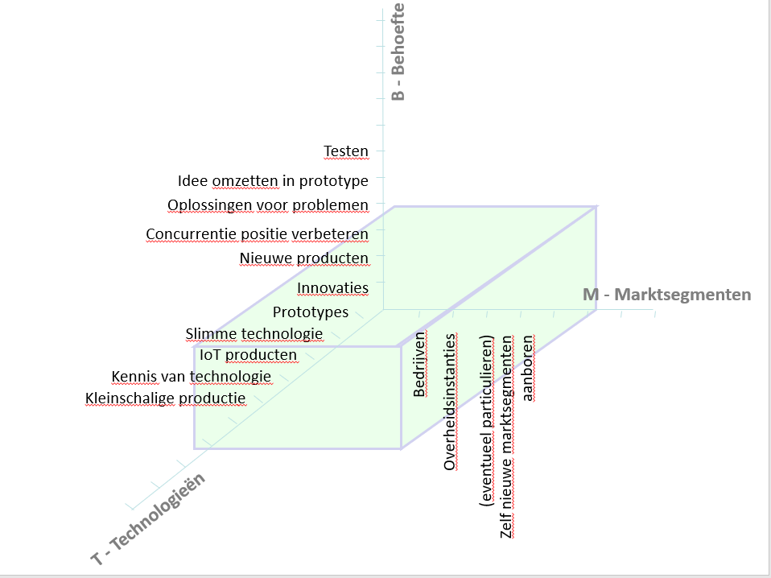
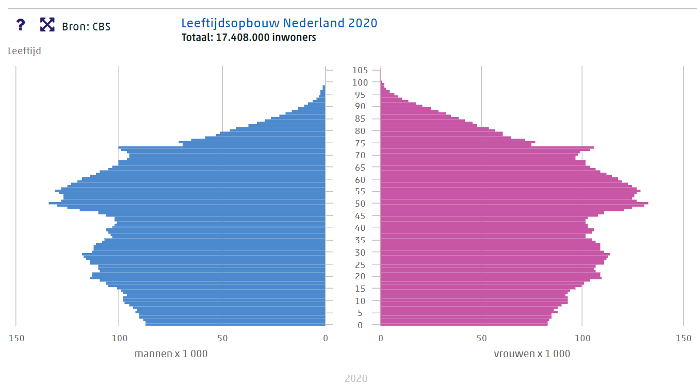

Analyse van ICR3ATE
Tijdens deze analyse van ICR3ATE wordt zowel de interne omgeving als de externe omgeving geanalyseerd. Dit zal worden gedaan aan de hand van een uitgebreide SWOT-analyse.
SWOT-analyse
De SWOT-analyse kan gebruikt worden om een strategische situatieanalyse uit te voeren en vormt de verbindende schakel tussen de interne situatieanalyse en de omgevingsanalyse. De SWOT bestaat uit 4 onderdelen, namelijk Strengths, Weaknesses, Opportunities en Threats (Thuis, 2014, p.137). Om zowel de interne als de externe omgeving van ICR3ATE te analyseren zal er naar 4 dingen gekeken worden: Om de SWOT-analyse af te bakenen is er een markt bepaald waar onderzoek naar gedaan zal worden. Deze markt is bepaald aan de hand van het Abell diagram dat te zien is in Figuur 1 (Management modellen site, z.d.).
Figuur 1. Abell diagram
Macro-omgeving
Om de Macro-omgeving in kaart te brengen zal er gebruik worden gemaakt van het DESTEP model. Het DESTEP model bestaat uit 5 factoren, namelijk (Thuis, 2014, p.145):- Demografische Factoren
- Economische factoren
- Sociaal-culture factoren
- Technologische factoren
- Ecologische factoren
- Politiek-juridische factoren
Demografische factoren
ICR3ATE richt zich voornamelijk op Nederlandse bedrijven, deze bedrijven hebben voornamelijk Nederlandse inwoners als afnemers.
De nederlandse bevolking telt 17.469.635 inwoners waarvan 378.000 werkloos zijn (CBS, 2020-e).
In Nederland is er sprake van vergrijzing binnen de bevolking, dit houdt in dat de gemiddelde leeftijd van de Nederlander hoger komt te liggen.
Hierdoor zijn er relatief gezien minder mensen die in staat zijn om te werken, dit kan een risico opleveren voor ICR3ATE om aan voldoende personeel te komen.
In Figuur 2 is leeftijdsopbouw van Nederland in 2020 te zien.

Figuur 2. Leeftijdsopbouw Nederland in 2020. Overgenomen uit Bevolkingspiramide door CBS, 2020 (https://www.cbs.nl/nl-nl/visualisaties/bevolkingspiramide)
Het opleidingsniveau van de Nederlandse bevolking groeit gestaagt, in 2020 was 16% van de bevolking universitair opgeleid en 25% op HBO niveau opgeleid (CBS, 2020-b). Naast hoogopgeleiden mensen beschikte Nederland in 2019 ook over 452.000 ICT'ers, waarvan bijna 60% zich bezig hield met software- en applicatieontwikkeling en -analyse. In totaal komt het aantal ICT'ers uit op 5% van de Nederlandse werkzame beroepsbevolking. Dit aantal groeit de afgelopen jaren behoorlijk, de groei van 2018 op 2019 was 9% (CBS, 2020-d). Ondanks het groeiende aantal ICT'ers groeit het aantal vacatures harder, hierdoor groeit het tekort aan ICT'ers (CBS, 2020-g). Dit kan problemen opleveren voor ICR3ATE om voldoende personeel te vinden.
Economische factoren
De Nederlandse economie heeft een behoorlijk klap gekregen door de wereldwijde COVID-19 uitbraak. Echter zijn de voorspellingen voor de toekomst redelijk gunstig, de verwachtingen zijn dat het producentenvertrouwen, het bbp,
de gewerkte uren, het consumentenvertrouwen, omzet in de uitzendbranche, de werkloosheid, aantal vacatures en de productie van Nederland in 2021 zullen herstellen.
De verwachting is echter ook dat consumptie en investeringen zullen afnemen, terwijl de verwachtte uitvoer en faillissementen zal toenemen (CBS, 2020-f).
De verwachting dat de investeringen zullen dalen kan een negatief effect hebben op ICR3ATE, aangezien bedrijven minder snel geneigd zijn om te investeren in bijvoorbeeld hulp van ICR3ATE (Innovatie, 2020).
Het BBP is op het moment van schrijven (27 december 2020) 2,5% lager dan 2019 (CBS, 2020-a), daarnaast is er sprake van 0,8% inflatie (CBS, 2020-e). De daling van het bbp is toe te schrijven aan de COVID-19 uitbraak.
Sociaal-culturele factoren
De Nederlandse bevolking doet steeds meer online, 96% van de bevolking, boven de 11 jaar, had in 2018 toegang tot internet. 86% van de Nederlandse bevolking gebruikt deze toegang tot het internet dan ook
dagelijks. Nederlanders gebruiken dit voor tal van zaken, zoals social media, telebankieren, tekstberichten uitwisselen en online shoppen (CBS, 2019).
Steeds meer studenten in Nederland kiezen voor een ICT-studie, in 2018 is het aantal ICT studenten gegroeid met 5,2%. Dit is echter niet genoeg om het tekort aan ICT-personeel op te vullen. Daardoor proberen steeds meer bedrijven medewerkers uit het buitenland te halen (NOS, 2018). ICR3ATE heeft zelf ook moeite met het vinden van geschikt personeel, daardoor hebben zij nu ook een Frans en Engels sprekende Belg in dienst.
Technologische factoren
De verwachting is dat IoT apparaten een nog belangrijkere rol in het leven van mensen gaat spelen. IoT staat voor Internet of Things, hiermee worden apparaten bedoeld die in verbinding staan met het internet.
Dit kan bijvoorbeeld een smartphone zijn, maar ook een koelkast of een wekker. De verwachting is dat er in 2027 41 miljard IoT-apparaten zijn, in 2019 waren dit er 8 miljard (Business Insider, 2020).
Daarnaast komt er een nieuwe 5G netwerk aan, hierdoor ontstaat er een snellere internet verbinding.
De ontwikkelingen op het gebied van artificial intelligence (AI) en machine learning (ML) gaan ook erg hard. Deze technieken kunnen onder andere gebruikt worden om grote hoeveelheden data snel te verwerken en bruikbare inzichten te krijgen (Business Inside, 2020). Door het groeiend aantal IoT apparaten onstaat er ook veel meer data dat gebruikt kan worden, hier komt het gebruik van AI en ML dan ook erg van pas.
ICR3ATE is erg actief bezig op het gebied van IoT-product ontwikkeling. Ze doen dit zowel voor klanten als het zelf ontwikkelen van nieuwe IoT oplossingen.
Ecologische factoren
De belangrijkste ecologische factor in Nederland is de uitstoot van schadelijke broeikasgassen zoals CO2 en de daarbij volgende opwarming van de aarde (Rijksoverheid, z.d.-a).
De ecologische factoren hebben weinig tot geen invloed op ICR3ATE. Echter is ICR3ATE wel bewust van de trend naar een groenere economie. Er zijn steeds meer bedrijven die opzoek zijn naar duurzamere oplossingen
of worden gedwongen hiertoe door regel- en wetgeving. ICR3ATE is op dit moment bezig met een project waardoor de argrarische sector optimaal gebruik kan maken van hun ondernemersvrijheid (hoeveel mogen ze uitstoten).
Door de beoogde oplossing wordt het mogelijk voor boeren om zeer exact te meten hoeveel ze uitstoten en of dit teveel is of dat ze juist nog ruimte hebben.
Politiek-juridische factoren
Na een rechtzaak in Nederland heeft de rechter besloten dat de overheid te weinig doet om de stikstof uitstoot terug te dringen. Hierdoor heeft de overheid besloten dat de argrarische sector minder stikstof mag uitstoten (Rijksoverheid, z.d.-b).
Zoals al beschreven is bij de ecologische factoren speelt ICR3ATE daar nu op in.
De Algemene Verordening Gegevensbescherming (AVG) heeft veel te weeg gebracht op het gebied van privacy in Nederland. Deze nieuwe wetgeving heeft dan ook de ICT sector erg beïnvloed. Deze wet zorgt ervoor dat organisaties niet zomaar alles mogen doen met persoonsgegevens. Dit houdt in dat voor de gene wie zijn persoonsgegevens verwerkt worden behoorlijk en transparant zijn hoe en waarom de persoonsgegevens verwerkt worden(Autoriteit persoonsgegevens, z.d.).
Het is dan ook belangrijk voor ICR3ATE om zorgvuldig om te gaan met de gegevens die verkregen worden door bijvoorbeeld IoT apparaten.
Meso-omgeving
Om de Meso-omgeving van ICR3ATE in kaart te brengen zal er gebruik worden gemaakt van het 5 krachten model van Porter. Het 5 krachten model van Porter bestaat uit:- De macht van leveranciers
- De macht van afnemers
- De mate waarin substituten en complementaire goederen verkrijgbaar zijn
- De dreiging van nieuwe toetreders tot de markt
- De interne concurrentie op de markt
- Conclusie 5 krachten model
De macht van leveranciers
ICR3ATE kan gebruik maken van veel verschillende leveranciers/merken. Aangezien de opdrachten van ICR3ATE erg wisselend zijn verschillen de leveranciers per opdracht.
Er is wel verschil qua hardware- en softwareleveranciers, er zijn namelijk erg veel hardwareleveranciers. Echter verkopen deze hardwareleveranciers vaak wel redelijk dezelfde merken.
ICR3ATE moet soms ook gebruik maken van externe softwareleveranciers voor hun producten. Deze software is vaak erg specifiek en er zijn weinig alternatieven, hierdoor kan het zijn dat ICR3ATE perse software
van een bepaalde leverancier moet afnemen. Hierdoor is ICR3ATE soms wel afhankelijk een bepaalde leverancier, echter zoals net al aangegeven verschillen de opdrachten van ICR3ATE erg waardoor dit geen structureel probleem kan opleveren.
Echter is het wel belangrijk om goed op de hoogte te zijn van de contract voorwaarden en hier duidelijke afspraken over te maken (Sanders, 2019).
De macht van afnemers
De afnemers van ICR3ATE zijn Nederlandse bedrijven en organisaties die niet voldoende tijd of kennis in huis hebben om een prototype te ontwikkelen van een gewenst product.
In Nederland zijn er weinig bedrijven met de expertise die ICR3ATE in huis heeft en dit gebruiken om (op kleine schaal) prototypes te bouwen voor bedrijven. Hierdoor is het voor afnemers
niet makkelijk om een extern alternatief te vinden. Echter hebben veel (voornamelijk grote) bedrijven een eigen R&D afdeling waar ze zelf aan innovatie producten en prototypes werken. R&D afdelingen hebben vaak hoge opstart kosten en er is gespecialiseerd personeel voor nodig,
hierdoor zullen veel bedrijven kiezen voor een extern bedrijf, vooral wanneer innovaties waarbij een prototyping nodig is incidenteel zijn.
ICR3ATE werkt veel aan innovatieve en 'baanbrekende' prototypes (ICR3ATE, z.d.-b), deze zijn echter vaak niet noodzakelijk voor bedrijven waardoor als het financieel minder gaat bij een bedrijf hier snel op bezuinigd word.
Veel bedrijven zijn afhankelijk van bedrijven zoals ICR3ATE om te kunnen innoveren, echter zal hierop ook snel bezuinigd worden wanneer het financieel minder gaat. De macht van afnemers is dus middelmatig.
De mate waarin substituten en complementaire goederen verkrijgbaar zijn
ICR3ATE maakt en ontwikkelt nieuwe producten (ICR3ATE, z.d.-b), hierdoor zijn er geen substituten en complementaire goederen verkrijgbaar waarmee deze producten vervangen kunnen worden.
Echter kan een bedrijf wel kiezen om niet te innoveren en gebruik te maken van de oude oplossing of manier van werken.
Er is dus geen dreiging van substituten of complementaire goederen.
De dreiging van nieuwe toetreders tot de markt
Het is niet erg gemakkelijk voor nieuwe bedrijven om toe te treden tot de markt en vooral de positie waarin ICR3ATE zich bevind. ICR3ATE heeft een multi-disciplinair team met electronica, mechanica en software experts en zelfs patent aanvragen kunnen geregeld worden(ICR3ATE, z.d.-b).
Er is in Nederland een tekort aan goed opgeleide ICT'ers, hierdoor is het niet gemakkelijk om al deze expertises in huis te halen (NOS, 2018).
De opstart kosten zijn ook redelijk hoog, er zal namelijk de nodige apparatuur aangeschaft moeten worden, denk hierbij aan 3D-printers, gereedschap(brede zin van het woord), computers, lasersnijders, waterstraalsnijders, werkplaatsen en software.
Daarnaast heeft ICR3ATE ook een band opgebouwd met hun afnemers, hierdoor wordt het lastig voor nieuwe toetreders om hier tussen te komen. Echter liggen er wel volop kansen door de stijging van R&D uitgaves(CBS, oktober-g).
De interne concurrentie op de markt
ICR3ATE is redelijk uitzonderlijk op de markt waar het zich bevind, dit komt door het multi-disciplinaire team waar het over beschikt (ICR3ATE, z.d.-b).
Veel concurrenten bieden voornamelijk Rapid Prototyping door middel van 3D printen, op dit gebied is er erg veel concurrentie voor ICR3ATE. Daarnaast hebben veel (voornamelijk grote) bedrijven
hun eigen R&D afdeling, dit zijn niet echt directe concurrenten maar hebben wel een groot marktaandeel op het gebied van R&D. ICR3ATE onderscheid zich van grote ingenieursbureaus door 1 of 2 maal vaker
de mogelijkheid te bieden om het oorspronkelijke idee aan te passen of een draai te maken in het ontwerp(Unique Selling Point). Terwijl bij de andere ingenieursbureaus het gehele innovatie budget in een keer gebruikt wordt (ICR3ATE, z.d.-a).
Doordat ICR3ATE een redelijk unieke oplossing bied zijn ze niet erg onderheven aan concurrentie.
Conclusie 5 krachten model
Aan de hand van het 5 krachten model van Porter kan geconcludeerd worden dat ICR3ATE een goede positie heeft ten opzichten van de concurrentie.
Het is voor nieuwe bedrijven lastig om aan de zelfde expertise te komen als ICR3ATE, dit komt onder andere vanwege het te kort aan personeel.
Wanneer meer bedrijven besluiten zelf te werken aan innovaties en prototypes kan dit een gevaar opleveren voor ICR3ATE.
Micro-omgeving
De micro-omgeving van ICR3ATE zal in kaart worden gebracht door een interne analyse uit te voeren aan de hand van het 7s model van McKinsey. Zoals de naam al zegt bestaat het 7s model uit 7 onderdelen:
Strategie
Missie ICR3ATE
"De huidige industrie wordt gedomineerd door conceptuele denkers. Maar je hebt óók denkende doeners nodig.
Er is in deze maatschappij een tekort aan mensen die meer praktisch, creatief en inventief te werk gaan.
Mensen die software kunnen ontwikkelen, apparatuur en meetinstrumenten kunnen bedienen, die apparaten en (proef)opstellingen kunnen bouwen.
Juist dit type mensen is broodnodig als je een conceptueel idee wilt materialiseren in een werkend prototype. En bij ICR3ATE vind je die" (ICR3ATE, z.d.-b).
Visie ICR3ATE
"We doen niets liever dan bedrijven, organisaties en professionals (productontwikkelaars / uitvinders) te helpen met innoveren door het ontwikkelen van baanbrekende prototypes.
Dat doen we het liefst in nauwe samenwerking met onze opdrachtgevers" (ICR3ATE, z.d.-b).
De strategie van ICR3ATE komt overeen met de differentiatiestrategie van Porter. Dit houdt in dat er gezocht wordt naar een unieke positie in de bedrijfstak om zich hiermee te onderscheiden. Dit doet ICR3ATE door het gehele proces te begeleiden in nauwe samenwerking met de klant (ICR3ATE, z.d.-b). Het onderscheiden van de concurrentie gebeurt op een manier waar de klant waarde aan hecht, dit sluit ook weer aan bij de differentiatiestrategie (Thuis, 2014, p.182).
Structuur
De organogram van ICR3ATE zal niet worden weergegeven vanwege het geringe aantal medewerkers, namelijk 5 mensen. Manfred is de eigenaar en daarnaast de directeur van ICR3ATE, hij stuurt
zijn medewerkers direct aan. Wanneer gekeken wordt naar de configuraties van Mintzberg is ICR3ATE een innovatie organisatie. Dit houdt in dat de ondersteunende staf het dominante organisatiedeel is, dit
betreft Manfred. Het primaire coördinatiemechanisme is onderlinge afstemming, door het kleine aantal medewerkers kan dit gemakkelijk plaats vinden (Thuis, 2014, p.346).
Binnen ICR3ATE hebben de medewerkers veel vrijheid en zijn ze verantwoordelijk voor hun eigen werk.
Systemen
“Onder de systemen vallen de menselijke en technische informatie- en communicatiesystemen, inclusief de informele vormen” (Thuis, 2014, p. 339).
Binnen ICR3ATE wordt er gebruik gemaakt van verschillende systemen. Google Meet, Google Drive en Gmail worden gebruikt voor communicatie en opslag van documenten.
ICR3ATE is erg gesteld op cyber security en maakt daarom alleen gebruik van deze systemen voor de hiervoor genoemde toepassingen.
Naast de Google systemen maakt ICR3ATE wisselend gebruik van veel verschillende software, dit wordt voornamelijk gebruikt voor de prototypes.
Stijl van leidinggeven
Zoals net al benoemd is Manfred de baas binnen ICR3ATE, echter zit hij niet strikt bovenop zijn medewerkers maar is hij er meer voor een ondersteunende rol.
Echter worden belangrijke beslissingen zeker met hem afgestemd.
Wanneer er gekeken wordt naar de Managerial Grid van Blake en Mounton is de manier van leidinggeven binnen ICR3ATE teammanagement. Dit houdt in dat er sprake is van veel aandacht voor de productie en de mens (Thuis, 2014, p.431).
Staf
De staf binnen ICR3ATE bestaat alleen uit Manfred, hij verzorgt alles omtrent de medewerkers.
Het medewerkers bestand van ICR3ATE bestaat uit bijna alleen maar mannen, dit komt omdat het werkt met ICT gerelateerde producten en er voornamelijk mannen werken in de ICT business (CBS, 2017).
ICR3ATE heeft sinds afgelopen jaar ook een Belgische software-development trainee in dienst
Sleutelvaardigheden
"Met sleutelvaardigheden worden de vaardigheden waarmee het bedrijf zich onderscheidt van de concurrentie bedoelt.
Deze vaardigheden zijn terug leiden naar individueel niveau" (Thuis, 2014, p. 339).
ICR3ATE onderscheidt zich door het gehele proces op zich te nemen en de klant hierbij nauw te betrekken(ICR3ATE, z.d.-b) en de optie te geven om tijdens het proces nog aanpassingen te maken (ICR3ATE, z.d.-a). Dit kunnen ze bewerkstelligen door het multi-disciplinaire team waarover ze beschikken.
Significante waarden
"De significante waarden van een bedrijf omvat de gezamenlijke waarden die men heeft binnen een bedrijf.
Dit noemt men ook wel de bedrijfscultuur" (Thuis, 2014, p. 339).
De kernwaarden van ICR3ATE zijn het stimuleren en creëren van innovatieve oplossingen voor haar klanten. De medewerkers van ICR3ATE zijn er op gebrand functionele nieuwe dingen te maken door middel van moderne en vooruitstrevende technologie.
Confrontatiematrix
In figuur 3 zijn de sterktes, zwaktes, kansen en bedreigingen voor ICR3ATE weergegeven.
Figuur 3. Overzicht sterktes, zwaktes, kanen en bedreigingen ICR3ATE
Aan de hand van de de interne en externe analyse is het overzicht in figuur 3 gecreërd. De sterktes, zwaktes, kansen en bedreigingen zijn tegen elkaar uitgezet in een confrontatiematrix die te zien is in figuur 4. De scores in de matrix zijn als volgt:
- Zeer gunstig effect = +2
- Gunstig effect = +1
- Geen effect of relatie te herkennen = 0
- Ongunstig effect = -1
- Zeer ongunstig effect = -2
Figuur 4. Confrontatiematrix
Conclusie
Aan de hand van SWOT-analyse en de confrontatiematrix kan geconcludeerd worden dat er enkele goede kansen voor ICR3ATE zijn maar ook enkele bedreigingen
waar ze rekening mee moeten houden. ICR3ATE zou er verstandig aan doen om nieuwe technologische ontwikkelingen te blijven volgen en die ook te gebruiken
bij hun producten en prototypes. ICR3ATE moet wel rekening houden dat ze een klein bedrijf zijn met een klein marktaandeel en dus niet overlopen worden door
grote ingenieursbureaus. De verwachtingen zijn dat investeringen terug gaan lopen de komende jaren, ICR3ATE er voor zorgen dat hun inkomsten niet terug gaan lopen hierdoor.
Literatuurlijst
Autoriteit persoonsgegevens. (z.d.). Algemene Verordening Gegevensbescherming (AVG). Geraadpleegd op 27 december 2020, van https://autoriteitpersoonsgegevens.nl/nl/over-privacy/wetten/algemene-verordening-gegevensbescherming-avg
Business Insider. (2020, 27 juli). Internet of things 2020: dit zeggen ruim 400 IoT-beslissers over hoe bedrijven hun omzet kunnen verhogen. Geraadpleegd op 27 december 2020, van https://www.businessinsider.nl/internet-of-things-2020-dit-zeggen-topbeslissers-belangrijke-trends/
CBS. (2019). Bijna iedereen en alles online. Geraadpleegd op 27 december 2020, van https://longreads.cbs.nl/trends19/maatschappij/trends/
CBS. (2020, 3 december-a). Economie. Geraadpleegd op 27 december 2020, van https://www.cbs.nl/nl-nl/visualisaties/welvaart-in-coronatijd/economie/
CBS. (2020, 9 september-b). Onderwijs. Geraadpleegd op 27 december 2020, van https://digitaal.scp.nl/ssn2020/onderwijs/
CBS. (2020, 16 december-c). Bevolkingspiramide. Geraadpleegd op 27 december 2020, van https://www.cbs.nl/nl-nl/visualisaties/bevolkingspiramide
CBS. (2020, 16 december-d). ICT-sector groeit harder dan de economie. Geraadpleegd op 27 december 2020, van https://www.cbs.nl/nl-nl/nieuws/2020/42/ict-sector-groeit-harder-dan-de-economie#:~:text=Niet%20alleen%20het%20aantal%20ICT,meer%20dan%20een%20jaar%20eerder.
CBS. (2020, 18 december-e). Nederland in cijfers. Geraadpleegd op 27 december 2020, van https://www.cbs.nl/
CBS. (2020, 24 december-f). Conjuctuurdashboard. Geraadpleegd op 27 december 2020, van https://www.cbs.nl/nl-nl/visualisaties/conjunctuurdashboard
CBS. (2020, oktober-g). ICT, kennis en economie 2020. Geraadpleegd op 27 december 2020, van https://www.cbs.nl/-/media/_pdf/2020/42/ict-kennis-en-economie-2020.pdf
CBS. (2017). ICT, kennis en economie 2017. Geraadpleegd op 3 januari 2021, van https://www.cbs.nl/-/media/_pdf/2017/26/ike2017-web.pdfICR3ATE. (z.d.-a). FAQ. Geraadpleegd op 3 januari 2021, van https://icr3ate.nl/frequently-asked-questions-faq/
ICR3ATE. (z.d.-b). Over ICR3ATE. Geraadpleegd op 3 januari 2021, van https://icr3ate.nl/ons-bedrijf/
ICR3ATE. (z.d.-c). Prototyping. Geraadpleegd op 3 januari 2021, van https://icr3ate.nl/prototyping/
Innovatie. (2020, 5 mei). Innovatie Attaché Netwerk Duitsland & Zwitserland. Geraadpleegd op 3 januari 2021, van http://innovatie.de/uitgaven-aan-research-development-in-tijden-van-corona/
Management modellen site. (z.d.). Abell diagram. Geraadpleegd op 27 december 2020, van https://managementmodellensite.nl/business-definition-abell/
NOS. (2018, 14 februari). ICT-sector zoekt personeel: 'In Nederland konden we niemand vinden'. Geraadpleegd op 27 december 2020, van https://nos.nl/artikel/2217258-ict-sector-zoekt-personeel-in-nederland-konden-we-niemand-vinden.html
Rijksoverheid. (z.d.-a). Klimaatverandering. Geraadpleegd op 27 december 2020, van https://www.rijksoverheid.nl/onderwerpen/klimaatverandering
Rijksoverheid. (z.d.-b). Maatregelen om stikstofprobleem op te lossen. Geraadpleegd op 27 december 2020, van https://www.rijksoverheid.nl/onderwerpen/aanpak-stikstof/maatregelen-om-stikstofprobleem-op-te-lossen
Sanders, M. (2019, 8 oktober). De macht van ICT-leveranciers. Geraadpleegd op 3 januari 2021, van https://www.sandersja.nl/2019/10/08/de-macht-van-de-ict-leverancier/
Thuis, P. (2014). Toegepaste organisatiekunde. Groningen/Houten: Noordhoff Uitgevers